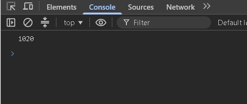
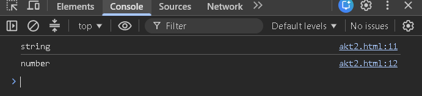
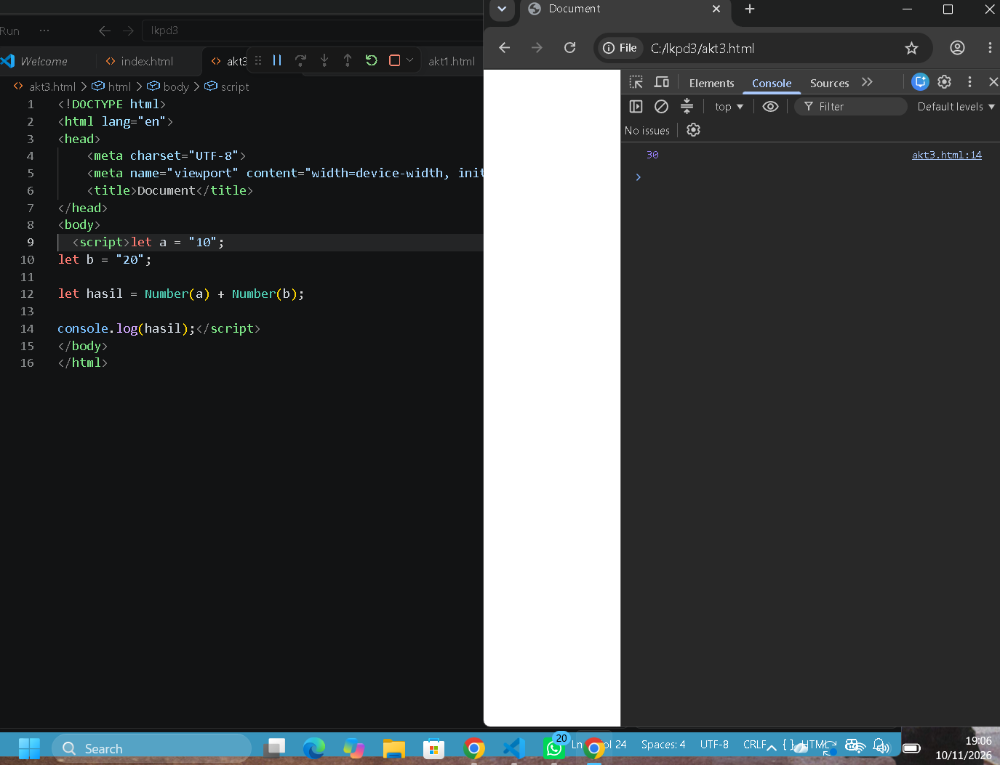
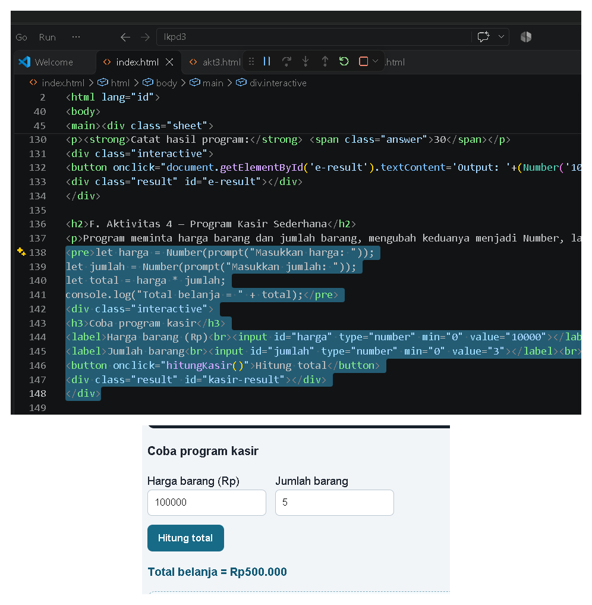
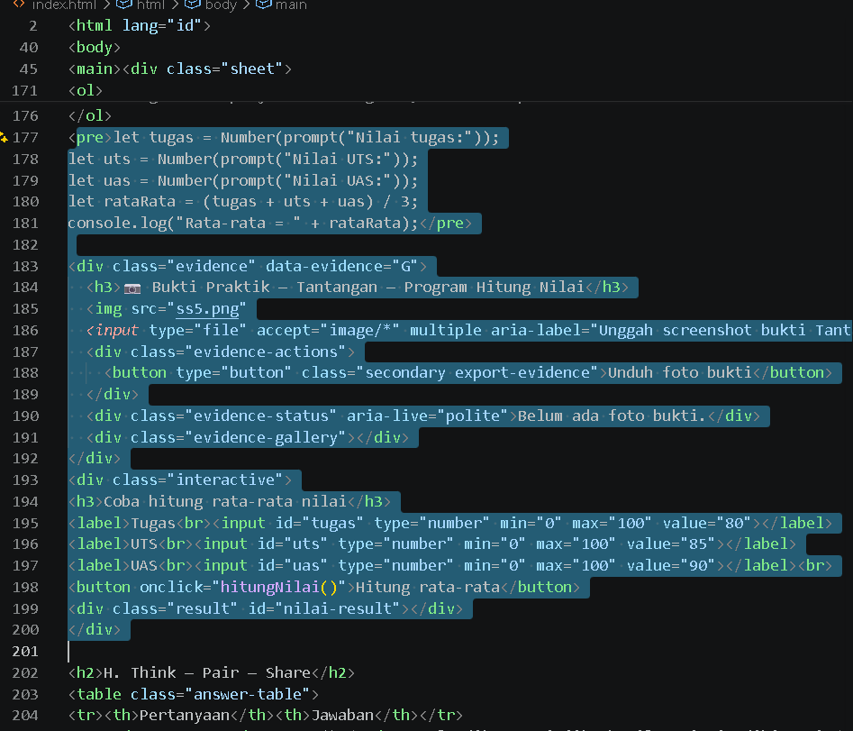

| Satuan Pendidikan | SMKN 1 GARUT |
| Mata Pelajaran | Dasar-Dasar Pengembangan Perangkat Lunak dan Gim |
| Kelas/Fase | X / Fase E |
| Alokasi Waktu | 2 × 45 menit |
| Nama | Fathier Alifan Janioreva |
| Kelas / No. Absen | X PPL 2/9 |
| Tanggal | 29 Oktober |
A. Tujuan Pembelajaran
Setelah menyelesaikan LKPD ini, peserta didik mampu membedakan String dan Number, menjelaskan bahwa prompt() menghasilkan String, menggunakan Number() dan String(), menganalisis kesalahan tipe data, serta membuat program input dan perhitungan sederhana.
B. Petunjuk Kerja
- Kerjakan secara mandiri terlebih dahulu.
- Prediksi hasil sebelum menjalankan kode.
- Jalankan kode dan amati hasilnya.
- Diskusikan melalui Think Pair Share.
- Simpan file LKPD setelah selesai.
C. Aktivitas 1 — Eksperimen 10 + 20
let a = "10"; let b = "20"; console.log(a + b);
| Pertanyaan | Jawaban |
|---|---|
| Apa output program? | "1020" |
| Mengapa hasil tersebut terjadi? | Karena a dan b berupa String. Operator + menggabungkan teks jika kedua nilainya String. |
| Apakah a dan b bertipe Number? | Tidak. Keduanya bertipe String karena nilainya ditulis di dalam tanda kutip. |
Uji sekarang. Apakah prediksimu benar? Jelaskan.
📷 Bukti Praktik — Aktivitas 1

D. Aktivitas 2 — Menemukan Tipe Data
let nama = "Asep"; let umur = 16; console.log(typeof nama); console.log(typeof umur);
📷 Bukti Praktik — Aktivitas 2 — Menemukan Tipe Data

| Variabel | Prediksi | Hasil typeof | Kesimpulan |
|---|---|---|---|
| nama | String | string | Berisi teks. |
| umur | Number | number | Berisi angka. |
Temuan: Apa perbedaan String dan Number berdasarkan eksperimen?
E. Aktivitas 3 — Konversi String Menjadi Number
Perbaiki program agar menghasilkan 30. Gunakan Number().
let a = "10"; let b = "20"; let hasil = Number(a) + Number(b); console.log(hasil);
📷 Bukti Praktik — Aktivitas 3 — Konversi String Menjadi Number

Catat hasil program: 30
F. Aktivitas 4 — Program Kasir Sederhana
Program meminta harga barang dan jumlah barang, mengubah keduanya menjadi Number, lalu menghitung total harga.
let harga = Number(prompt("Masukkan harga: "));
let jumlah = Number(prompt("Masukkan jumlah: "));
let total = harga * jumlah;
console.log("Total belanja = " + total);
Coba program kasir
📷 Bukti Praktik — Aktivitas 4 — Program Kasir Sederhana

| Input Uji | Nilai |
|---|---|
| Harga | Rp10.000 |
| Jumlah | 3 |
| Total seharusnya | Rp30.000 |
| Total program | Rp30.000 |
G. Tantangan — Program Hitung Nilai
Buat program dengan input nilai tugas, UTS, dan UAS. Konversikan semua input menggunakan Number(), lalu hitung rata-rata dengan rumus (tugas + UTS + UAS) / 3.
Algoritma saya:
- Meminta pengguna memasukkan nilai tugas, UTS, dan UAS.
- Mengubah semua input menjadi tipe Number.
- Menjumlahkan ketiga nilai.
- Membagi hasil penjumlahan dengan 3, lalu menampilkan rata-rata.
let tugas = Number(prompt("Nilai tugas:"));
let uts = Number(prompt("Nilai UTS:"));
let uas = Number(prompt("Nilai UAS:"));
let rataRata = (tugas + uts + uas) / 3;
console.log("Rata-rata = " + rataRata);
Coba hitung rata-rata nilai
Bukti Screenshot Aktivitas G

H. Think — Pair — Share| Pertanyaan | Jawaban |
|---|---|
Mengapa prompt() perlu dikonversi jika hasilnya ingin dihitung? | Karena prompt() menghasilkan String. Agar dapat dihitung sebagai angka, nilainya perlu diubah menggunakan Number(). |
| Apa perbedaan "10" dengan 10? | "10" adalah String karena memakai tanda kutip, sedangkan 10 adalah Number karena berupa angka tanpa tanda kutip. |
| Apa yang terjadi jika lupa Number()? | Nilai input tetap berupa String. Jika dijumlahkan dengan +, hasilnya bisa digabungkan sebagai teks, bukan dijumlahkan. |
Pair: Bandingkan jawaban dengan teman. Apakah sama? Mengapa bisa berbeda?
Share: Sampaikan satu temuan penting kepada kelas.
prompt() harus dikonversi menjadi Number jika ingin digunakan dalam perhitungan angka.I. Refleksi 3–2–1
3 hal yang saya pahami:
- String digunakan untuk menyimpan teks.
- Number digunakan untuk menyimpan angka.
Number()dapat mengubah String angka menjadi Number.
2 hal yang masih membingungkan:
- Perbedaan konversi otomatis dan konversi manual.
- Penanganan input yang bukan angka.
1 hal yang ingin saya coba pada program berikutnya:
J. Penilaian Diri
Centang sesuai pemahamanmu setelah mengerjakan LKPD.
K. Rubrik Penilaian Praktik
| Aspek | 4 — Sangat Baik | 3 — Baik | 2 — Cukup | 1 — Perlu Bimbingan |
|---|---|---|---|---|
| Tipe data | Menjelaskan dan membedakan String/Number dengan benar. | Benar dengan sedikit arahan. | Masih ada kekeliruan. | Belum memahami. |
| Konversi | Tepat dan mandiri. | Benar dengan sedikit arahan. | Beberapa kesalahan. | Belum mampu. |
| Program | Berjalan benar dan rapi. | Sedikit kesalahan. | Berjalan sebagian. | Belum berjalan. |
| Pemecahan masalah | Menemukan dan memperbaiki kesalahan secara mandiri. | Membutuhkan sedikit bantuan. | Membutuhkan banyak bantuan. | Belum mampu. |
Catatan Guru:
....................................................................................................................................................
....................................................................................................................................................